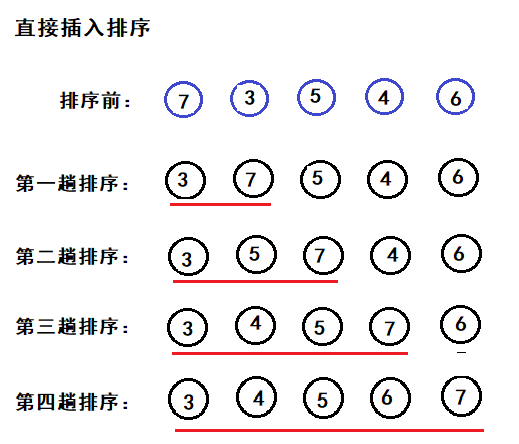
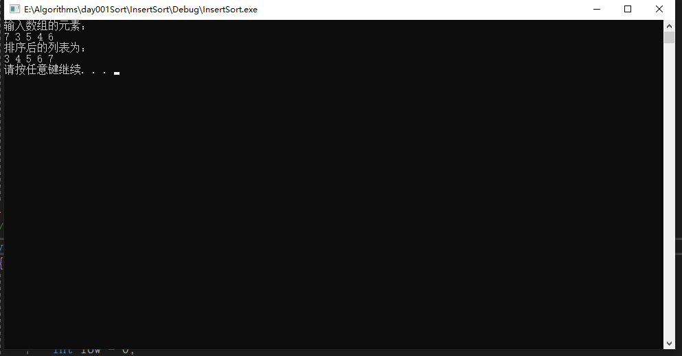

基本概念
直接插入排序是一种最简单的排序方法，排序过程为：先将第一个元素看作是只有一个元素的有序子表，然后从第二个元素开始，将待排序元素依次插入到前面有序的子表中，直到全部排序完毕。在整个过程中，前面的元素是已经排序号的列表，后面的元素为待排序处理。
基本过程
将第一个元素看作是一个有序的列表，从第二个元素开始将元素与有序部分中的元素比较找到合适的插入位置，将插入位置后的元素依次后移一个位置。在最好的情况下表中的元素已经是有序表只需要比较不需要移动，这是的时间复杂度是O(n)。最坏的情况下，表中的元素是逆序的比较次数达到最大为：∑ni=2 i，总的移动次数也达到最大为∑ni=2 (i+1)。平均的情况下带排序的元素是随机的，此时可以去上诉情况的平均值作为平均情况下的时间复杂度总的比较和移动的平均次数约为n2/4。所以直接插入排序的时间复杂度为O(n2)。
排序过程中需要一个辅助空间，所以时间复杂度为O(1)。
如下排序是将列表{ 7，3，5，4，6 }升序的排序过程。

以下是C++代码实现：
#include <iostream> using namespace std; //创建数组 void CreateArry(int arry[], int len) { cout << "输入数组的元素。。。" << endl; int key; for (int i = 0; i < len; i++) { cin >> key; arry[i] = key; } } //直接插入排序 void Inert_Sort(int arry[], int len) { int i, j; for (i = 1; i < len; ++i) { int temp = arry[i]; for (j = i - 1; j >= 0; --j) { if (temp < arry[j]) { arry[j + 1] = arry[j]; //在有序列表中比temp值大的元素后羿 } else { break; }//temp大于有序表中的最后一位则不需要移动 } arry[j+1] = temp;//跳出内层循环后插入在合适的位置 } } //打印数组 void Print(int arry[], int len) { for (int i = 0; i < len; i++) { cout << arry[i] << " "; } cout << endl; } void test01() { int arry[5]; int len = sizeof(arry) / sizeof(arry[0]); CreateArry(arry, len); Inert_Sort(arry, len); Print(arry, len); } int main() { test01(); system("pause"); return 0; }
运行结果：
输入待排序序列 7，3，5，4，6
